Clarity for App Grocery Orders
Milk & More is a leading UK grocery box delivery service. This project was part of a larger redesign of their mobile app. Having already built the app’s design system, my focus for this phase was to improve the order flow — reducing friction and making it clearer for users to place either repeat or one-off orders.

Product Design
Figma, UXCam, Mixpanel, Lyssna
3 months
My Role
I was the sole UI/UX designer on the project, working with the Product Manager and developers from research through to handoff.
- Analysed Mixpanel data, UXCam recordings and support logs to identify problems in the ordering journey.
- Audited competitor grocery apps and mapped the existing ordering and subscription flows.
- Designed and prototyped a new flow for creating, editing, pausing and switching orders.
- Tested the prototype with eight participants through Lyssna and iterated based on their feedback.
- Worked with developers to hand off the final designs using the existing design system.
The Problem
Subscriptions were intended to make repeat grocery shopping easier, but the ordering experience was creating confusion. Users were mixing up One-off and Subscription orders, which could lead to unexpected charges, missed deliveries and avoidable support requests.
There was also very little flexibility once an order had been created. If someone wanted to change or pause a subscription, their main options were to cancel it or contact support.
Research & Insights
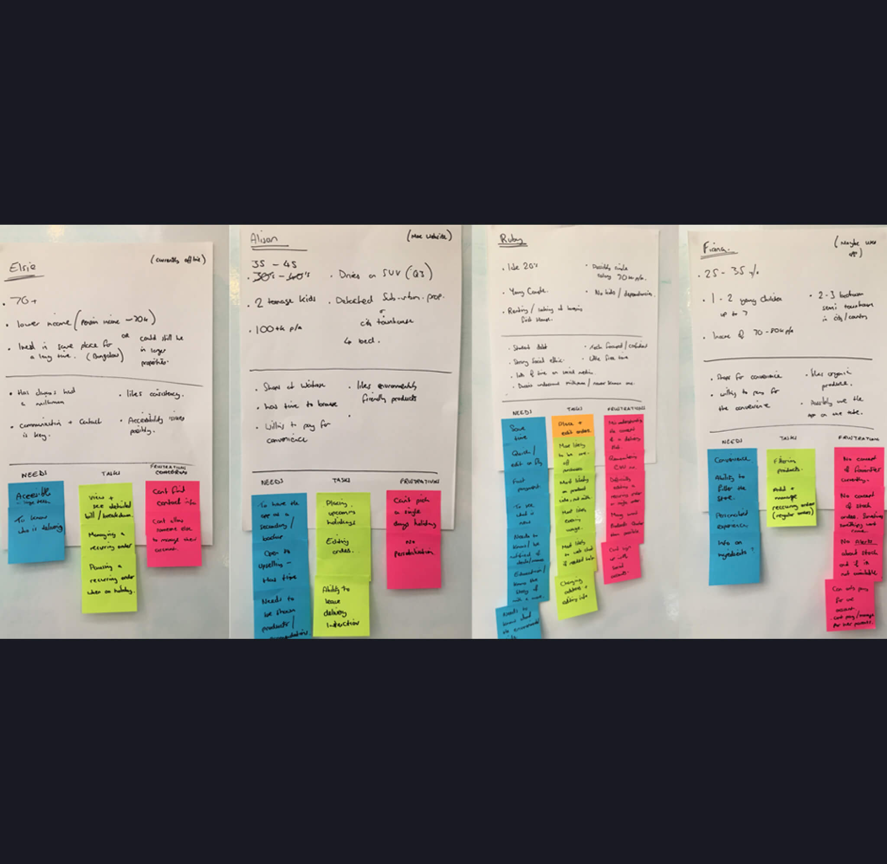
Personas
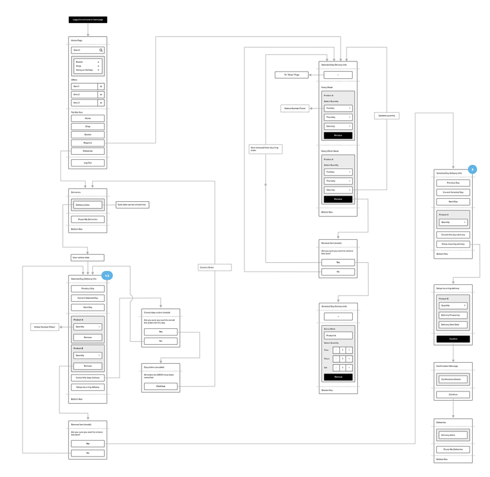
User flow
I started by auditing other UK grocery apps to see how they handled basket setup, delivery dates and subscription schedules. I then looked at Mixpanel data and support logs to understand where users were struggling. There was a noticeable drop-off during the ordering process, alongside a high number of support requests relating to ordering mistakes.
UXCam session recordings helped explain what was happening. Users were frequently selecting the wrong option inside the Add to Basket modal, while others abandoned the process altogether. The labels weren't clear, the hierarchy made the options difficult to distinguish, and important information about delivery frequency was easy to miss. This gave us a clearer picture of the problem: users weren't necessarily struggling with subscriptions themselves — the interface wasn't giving them enough clarity or control.
Ideation & Strategy
I mapped the existing ordering journey and identified where we could give users more control without making the experience more complicated. The new flow allowed users to:
- Choose between One-off and Subscription orders more clearly
- Edit an existing order
- Switch between One-off and Subscription
- Pause upcoming deliveries when they were away
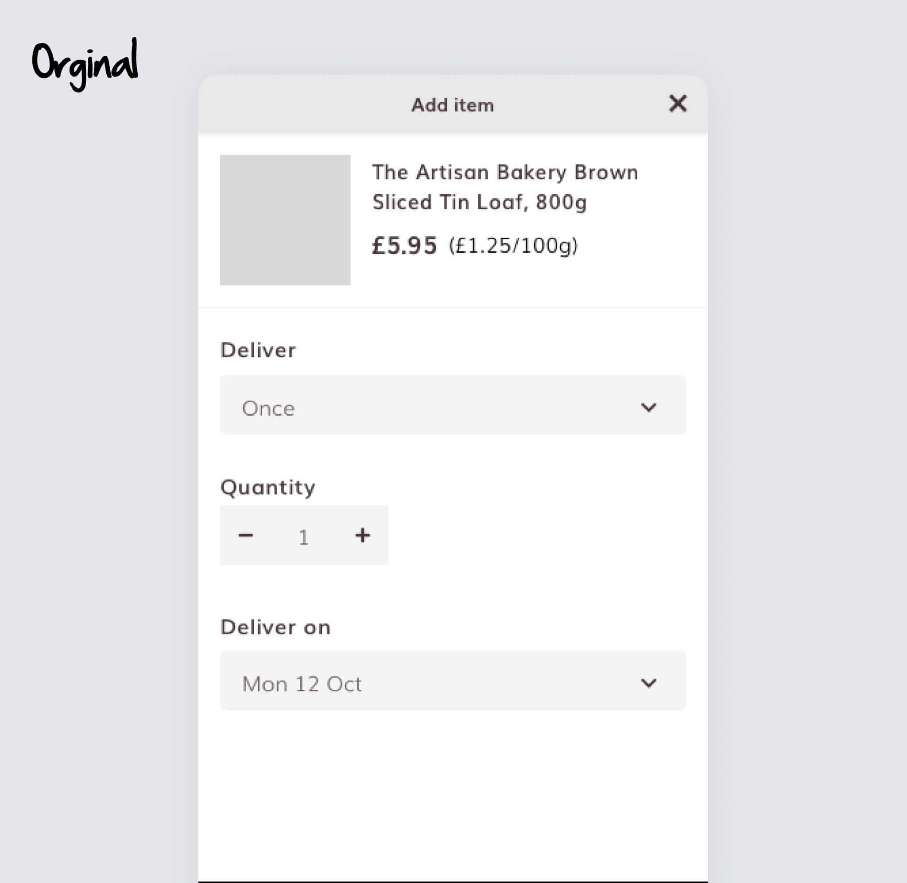
Original version
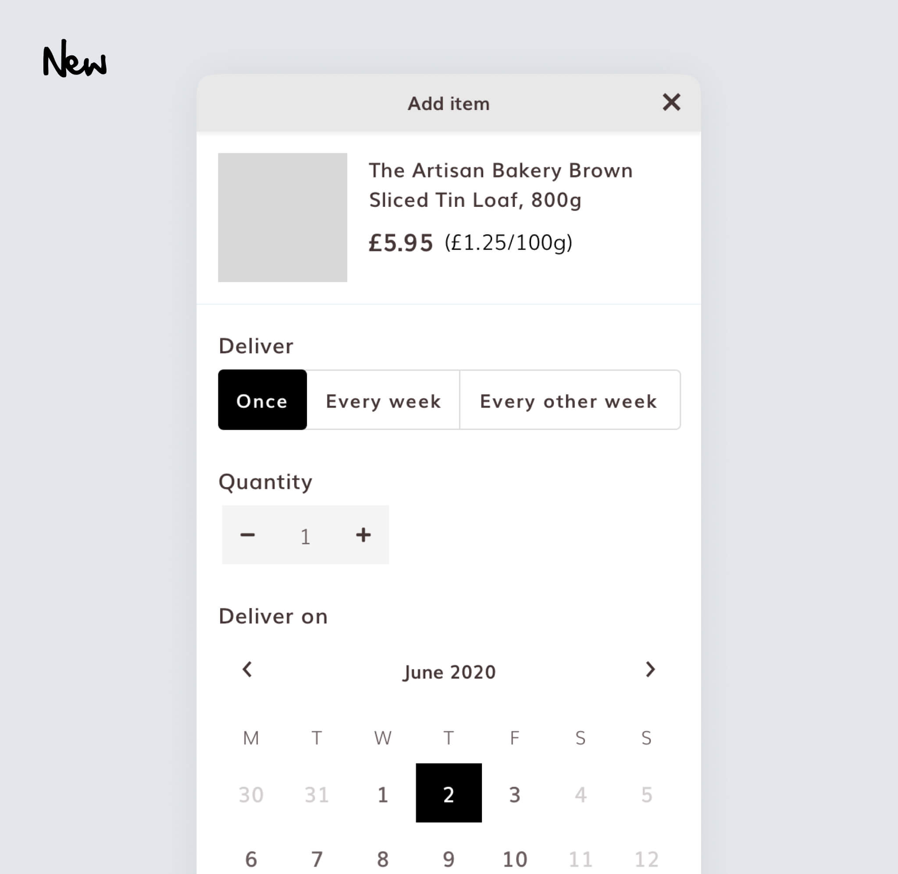
New version
For the Add to Basket modal, I replaced hidden dropdowns with clearer controls and introduced a calendar so users could see and select delivery dates more easily.
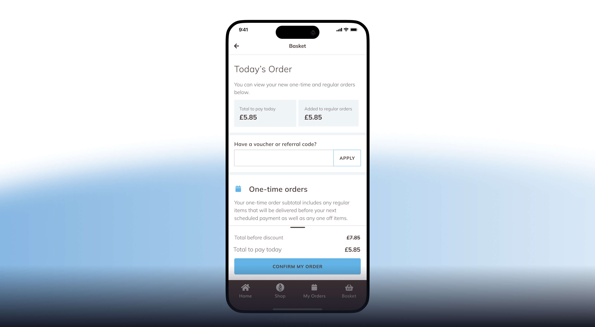
Basket revised with clear distinct
I also separated One-off and Subscription items throughout the experience. In the basket and My Orders screens, the two types were grouped separately with clear headings, prices and delivery frequencies. The aim wasn't to add more functionality for its own sake. It was to make the existing choices easier to understand while giving users more control over their orders.
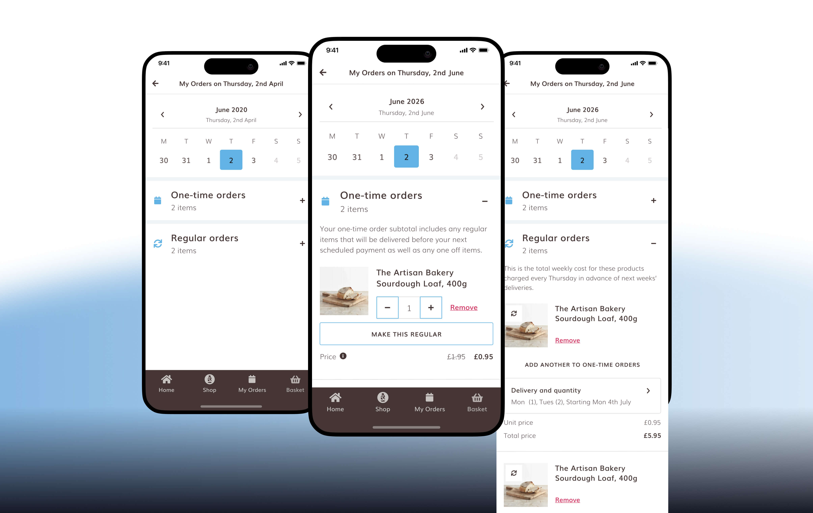
View and edit my orders
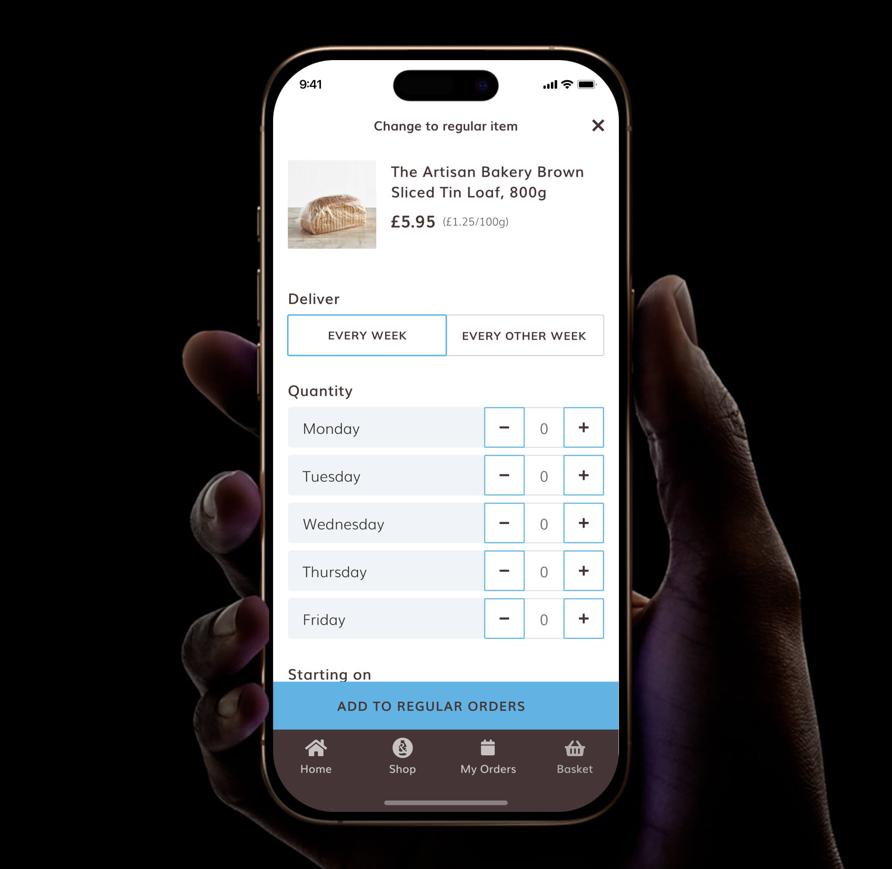
Convert to an one-off order
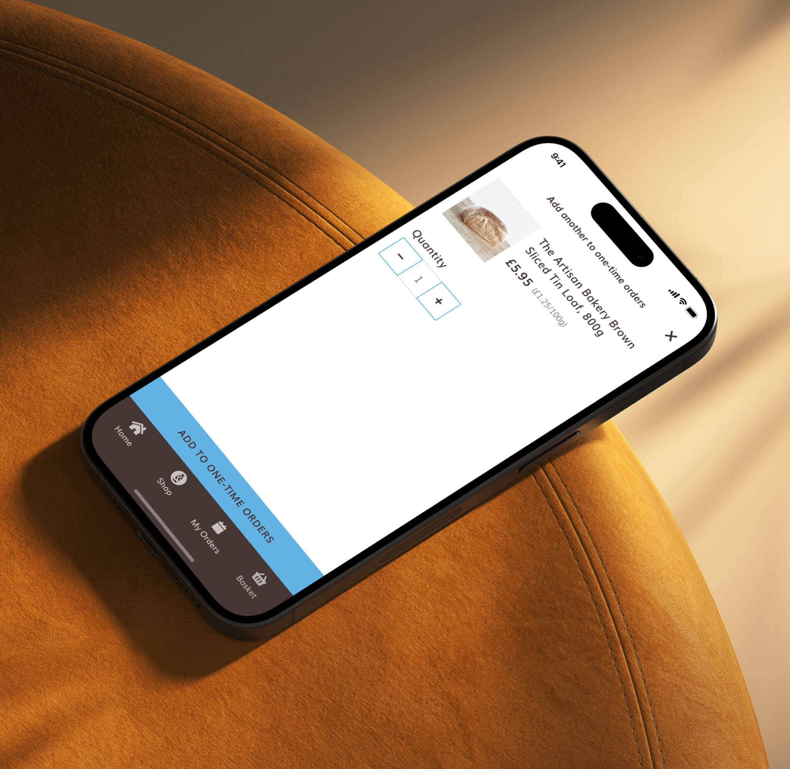
Convert to an repeating order
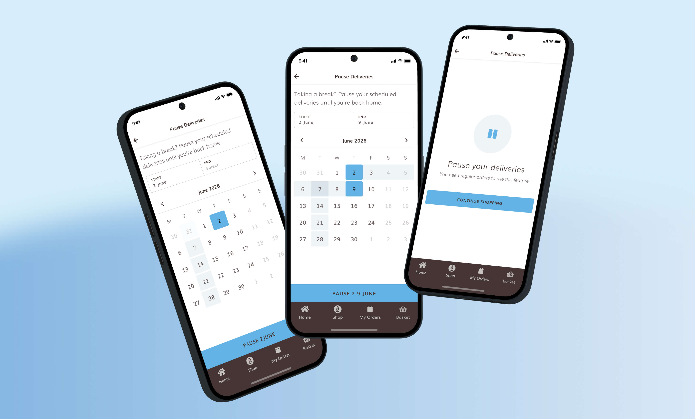
Newly added Pause your orders flow
Design & Testing
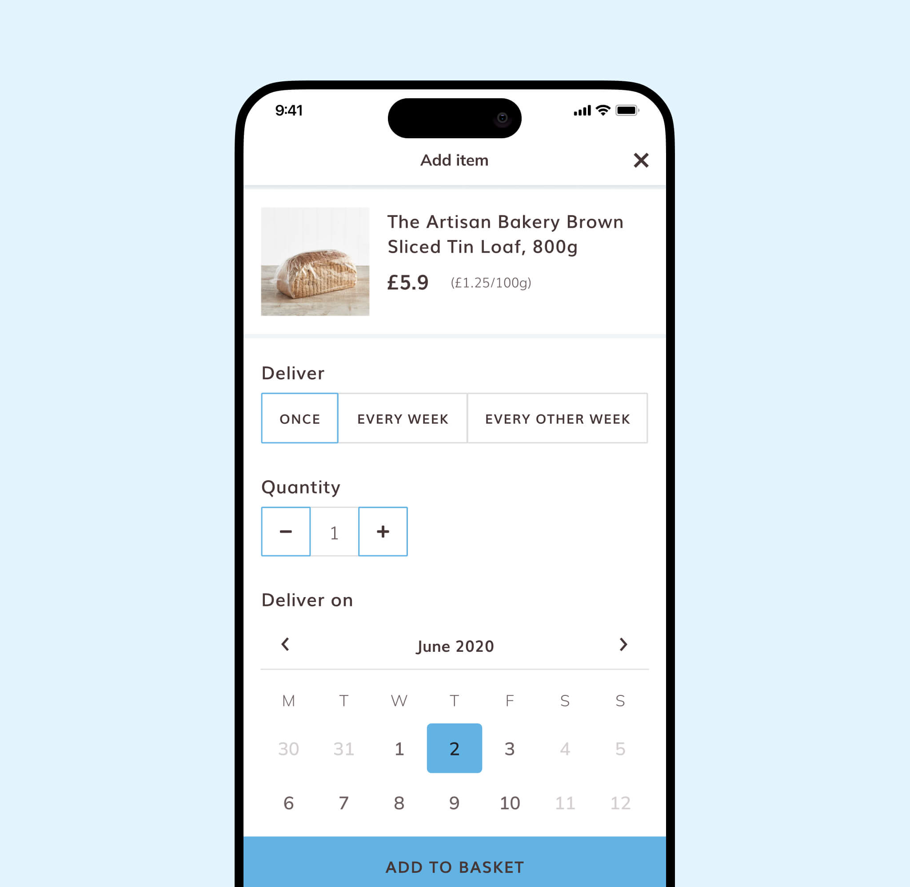
Add to basket
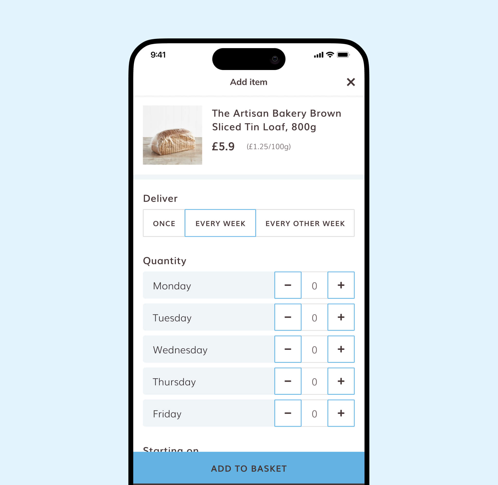
Add to basket add a repeating order
I built the final UI using the existing design system, keeping the experience consistent with the rest of the app. I then created a prototype and tested the flow with eight participants through Lyssna. The testing was qualitative, helping me identify points of confusion rather than statistically validating the design.
One issue that came up was the term "bi-weekly", which participants interpreted differently. I changed this to "Every 2 weeks" and made the delivery pattern more visible by highlighting repeating dates on the calendar.
I also added explicit messaging showing when an order would start and when future deliveries would repeat. These changes addressed the main points of confusion identified during testing and made the subscription schedule easier to understand.
Outcome
- Subscription-related support tickets fell by 35%
- Cart abandonment fell by 20%
Giving users more control over their subscriptions also reduced the need to contact support for simple changes such as pausing or editing an order. The results suggested that improving clarity at the point of purchase, combined with giving users more control afterwards, helped create a smoother ordering experience.
What I Learnt
This project reinforced how much impact small UX decisions can have. Something as simple as unclear terminology or hiding an important choice behind a dropdown can lead to real problems for users.